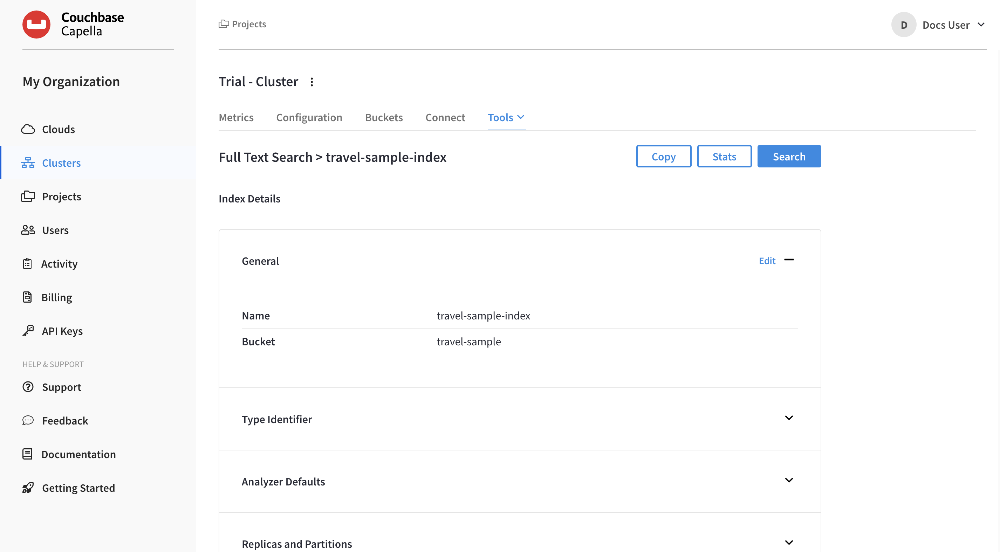
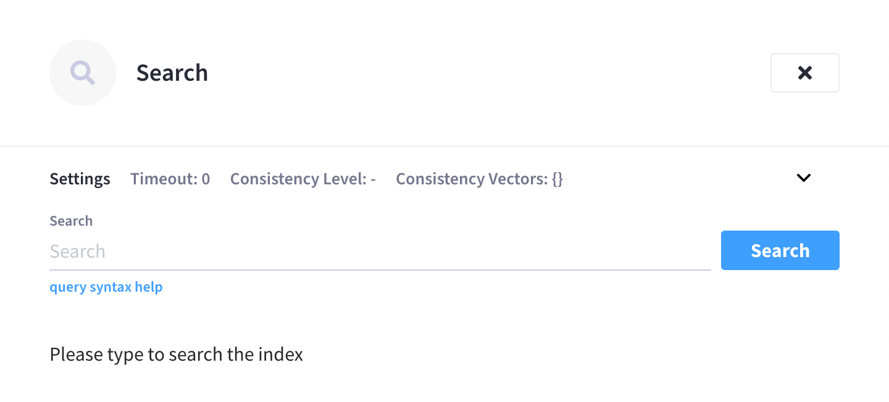
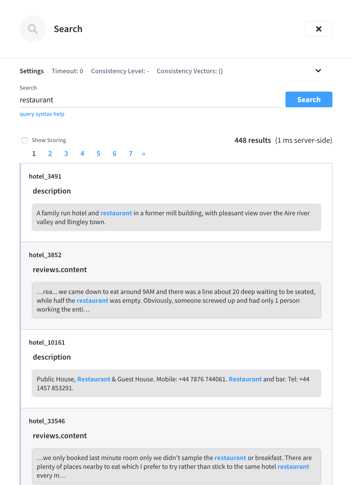
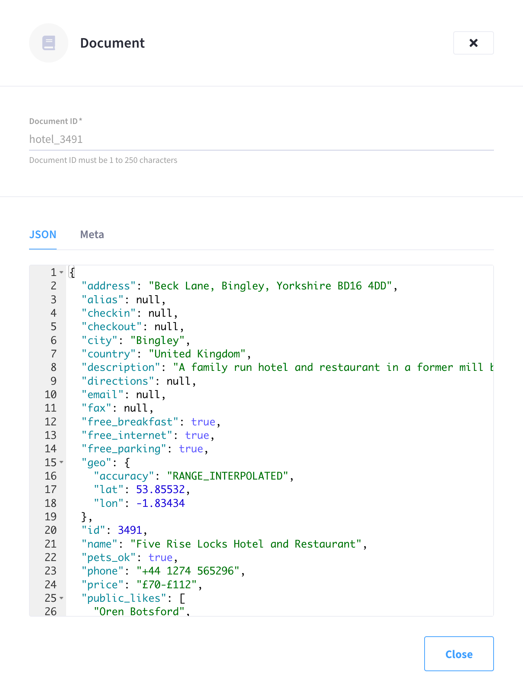

Perform Full Text Searches
Full text searches can be performed directly from the Couchbase Capella UI.
Every Full Text Search is performed on a user-created Full Text Index, which contains the targets on which searches are to be performed: these targets are values derived from the textual and other contents of documents within a specified bucket.
Search a Full Text Index
Within the Couchbase Capella UI, you can query a Full Text Index and receive detailed results in a visual format.
| Full Text Indexes that are created through the Couchbase Capella UI do not have a default type mapping. Searching a Full Text Index will not return any results until you modify the index configuration to add a type mapping. |
|
Permissions Required
In order to search a Full Text Index via the Couchbase Capella UI, the following permissions are required:
|
-
Go to the cluster’s Tools > Full Text Search tab.
-
Go to the Clusters tab in the main navigation.
-
Find and click on the cluster that contains the Full Text Index that you wish to search.
This opens the cluster with its Metrics tab selected.
-
Click the Tools > Full Text Search tab.
-
-
Find and click on the index that you wish to search.
This opens the index’s configuration page.
 -
Click Search.
This opens the Search fly-out menu.
 -
To perform a query, type a term into the Search field and click Search.
A term without any other syntax is interpreted as a match query for the term in the default field. The default field is _all. For example,poolperforms a match query for the termpool. Refer to the section Advanced Searches for additional information about using queries.Results appear under the Search field, featuring documents that contain the specified term:
Results are paginated with 10 results per page. The total number of documents matching the search is displayed at the top-right of the results alongside the amount of time it took for the Search Service to execute the search on the cluster (otherwise known as query latency).
Clicking on any of the displayed document IDs opens the Document fly-out menu, featuring the entire contents of the document:

Advanced Searches
When performing a search, you can expand the Settings panel at the top of the Search fly-out menu to reveal additional advanced settings:
The interactive fields and checkboxes are:
-
Set consistency level to
at_plus: When checked, bounded consistency is implemented for the query. The request includes ascan_vectorparameter and value, which is used as a lower bound, allowing you to implement Read-Your-Own-Writes (RYOW). Specify the value of thescan_vectorparameter in the Consistency Vectors field. For more information, refer to the page Understanding Queries in the Couchbase Server documentation. -
Timeout (ms): The amount of time that the Search Service will allow the query to run, specified in milliseconds. If the query time reaches the specified timeout value, only partial results are returned.
-
Consistency Vectors: The value of the
scan_vectorparameter.Scan vectors are built of two-element [
value,guard] entries:-
value: a vBucket’s sequence number (a JSON number) -
guard: a vBucket’s UUID (a string)
Scan vectors have two forms:
-
Full scan vector: an array of [
value,guard] entries, giving an entry for every vBucket in the system. -
Sparse scan vectors: an object providing entries for specific vBuckets, mapping a vBucket number (a string) to each [
value,guard] entry.Example of a Sparse Scan Vector{ "5 ": [5409393,"VB5ID"], "19": [47574574, "VB19ID"] }
-
Any configuration changes made within the Settings panel are applied to the next query that executes in the Search field.
The configurable options in the Settings panel are essentially a convenient user interface for applying some of the common features available in the query string syntax. The Search field supports full query string queries, which can be used in conjunction with, or in place of, the configuration in the Settings panel. For an explanation of the supported query syntax, you can click query syntax help underneath the Search field, which opens the page server:fts:query-string-queries.adoc in the Couchbase Server documentation. Note that a Query String Query is the only type of query that can be executed by the Search field.
After executing a search, note the Show Scoring checkbox that appears above the search results. When this is checked, scores for each document are provided: